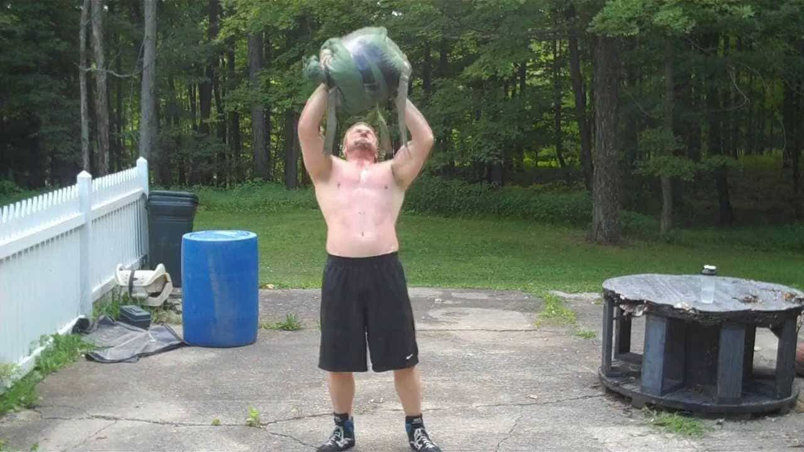
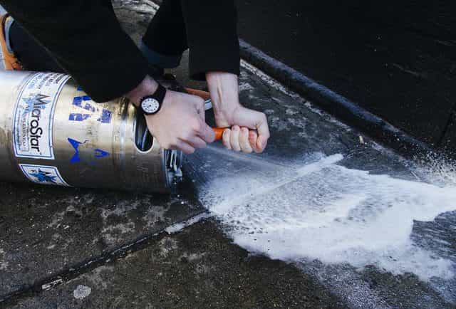
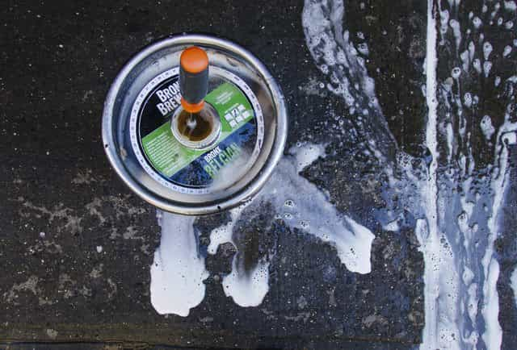
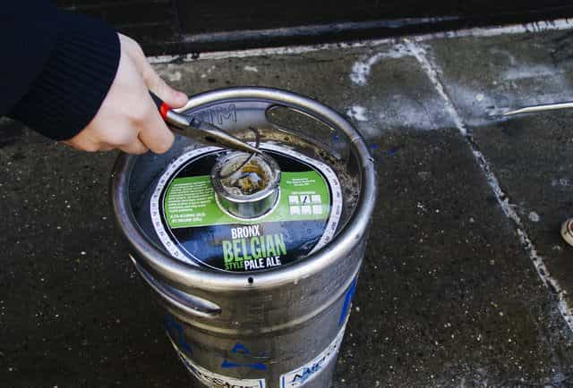
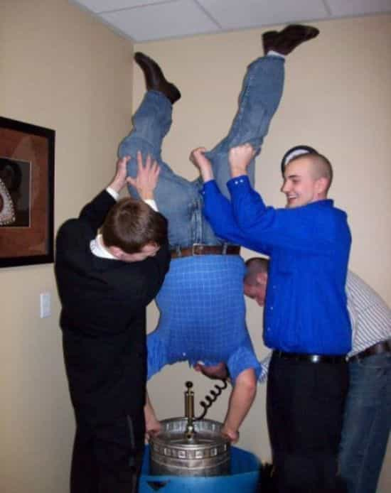
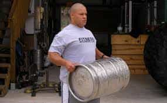

Who doesn’t enjoy lifting weights? It’s a ripping good time—whether you be training to make yourself stronger and fulfill your potential as a man, or purely to pack on aesthetic muscle and impress the women in your life. Weight training is something we should all partake in.
And not only should you use regular old weights—if you truly want to maximize your strength and ability, you should look into odd object training!
What?
It’s exactly what it sounds like: training with oddly shaped weighted objects rather than traditional weights. While these are less regulated and quantifiable than traditional weights, their advantages lay in their irregular and odd shapes, forcing the trainee to utilize stabilizing muscles that the traditional lifts would never even touch.
They more accurately mimic the stresses of actual labor, making you stronger should you have to engage in that. And much like regular weights, the best odd objects can be lifted and manipulated in a variety of different ways and different exercises.

The Keg
There are a variety of odd objects you can use in your training, but the one I would recommend to start off with, and the one that is most likely the easiest to obtain is the humble 50 liter/15.5 gallon keg. Empty, it weighs somewhere in the ballpark of 30 pounds, and difficulty can be increased by adding water—or if you’re a glutton for punishment, sand, BBs, or even molten lead or some other soft metal (for the truly insane).
No matter what you fill it with, the substance sloshing around will force your stabilizer muscles to compensate for the extra movement, making the exercise more difficult.
Seeing as a fresh keg from the liquor store will probably run you more than a 100 dollars, I would not recommend buying a new one. Instead, you can do something akin to what I did to get my keg:
Go to your nearest college campus early on a Sunday morning, and poke around the fraternity houses for an empty keg from last night’s party. Yes, technically they’re supposed to bring it back to the liquor store, but to hell with them, you have more important things to be doing with it then drinking Natural Ice or some other cheap pisswater while chasing after pudgy sluts.
Alternatively, go to a bar or liquor store and dig around the dumpster to see if there is an empty keg—or hell, you could probably ask if they have any old kegs laying around and get it cheap.
Then bring your keg home—you are going to have to modify it to make it “workout capable”. And that modification mainly involves taking out the spear, depressurizing the keg, and emptying it if need be.
Removing The Spear
If you’re lucky, your keg will be empty and weigh only 30 pounds, making transport a breeze. If you’re unlucky—and I *was*—then the keg will be full or nearly so.
A fully loaded keg weighs 160 pounds, and if you must know, the keg that I currently use to work out with weighed 102 pounds when I first brought it home—and carrying that thing home (I live very close to a college campus, and found the keg while out for a walk) was a workout in and of itself!
To open up the keg safely, you will need needle nose pliers, a flathead screwdriver, and an adjustable wrench or vice grip.
Bring the keg outside—unless you enjoy the smell of crappy domestic beer permeating your home—and rest it on its side with the top pointing away from you.

Now you need to release the air pressure. Take your screwdriver, and push it into the release valve in the center of the center column (that column is the spear). Jam it in real hard. You will most likely get an explosive reaction. Aim away from your face and when the spraying stops, you can move on.

Once the keg’s depressurized, you need to remove the retaining ring from the top of the spear. Find one of the two notches from the top of the spear, pry the ring up with a screwdriver and remove it with your pliers.

And finally, use your wrench to rotate the spear clockwise, after which it’ll come out when you pull up.
Then, do what you will with the beer inside. Once it’s empty, you can leave it as is or fill it up with whatever you want. Make sure you get a sizable bung to plug up the hole. Remember that a keg is 50 liters, and 1 liter is equivalent to 1 kilogram is equivalent to 2.2 pounds. You can adjust the weight easily once you remember that formula.
Three Keg Exercises
Because I like you a lot, here are three exercises to do with a keg.
1. Keg stand pushup
The old reliable from your college days, use the keg as a defacto set of parallel bars and do handstand pushups with it, making sure to go into a deeper range of motion than floor handstand pushups. You can use the wall to balance yourself if need be.

2. Keg Clean And Jerk
A little bit different than the Olympic style clean and jerk—put the keg on its side and lift it up to your hips. Due to the shape of the keg, you should be able to keep your back even straighter than you would doing a proper form deadlift, so throwing out your back is not likely as long as you do it with proper form.
Once it is off the ground, keep your back straight and roll it up to your chest and shoulders. Then lift it up and over your head.

3. Keg Toss
Simple—just put your hands under it and toss it backwards and over your head. MUCH easier said than done.
And with that, you can get a great, total body workout with a keg. Get to it!
Read More: Mainstream Media Applauds Actor And Globalist Mouthpiece Jesse Williams For Racist Tirade